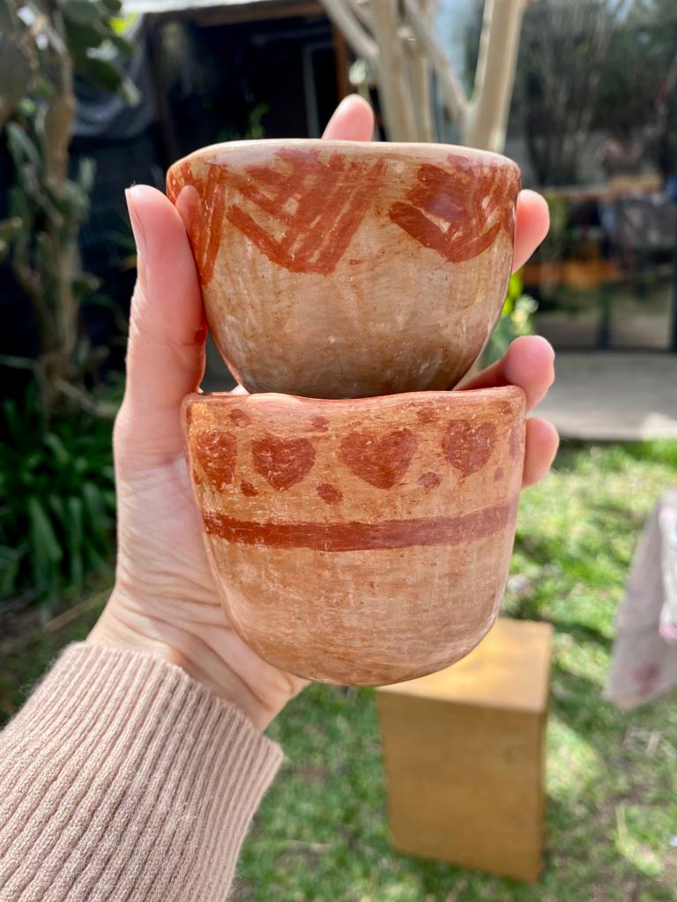
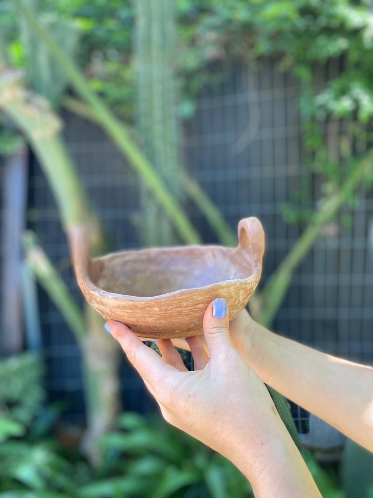

Terracota

La Línea terracota es una colección de piezas simples, pensadas y fabricadas a partir del antojo de querer vestir cualquier repisa o rincón. La combinación de pasta cerámica con diferentes barros de la zona, genera la variedad de tonos marrones. Son piezas quemadas en alta temperatura; fabricadas en torno, con acabado natural exterior y esmalte por dentro.
Vajillas

Vajillas con personalidad Estilos clásicos con esmaltes únicos. Formas básicas con detalles que aportarán autenticidad a tu mesa. Piezas fabricadas a mano que reflejan la técnica y procesos de cada artesano.
Tazitas
Tazas pequeñas de ceramica hechas a mano por nosotros, para que disfrutes de tus cafés, tés, etc. Aptas para horno y microondas.
Cuenco
Los mejores cuencos para decorar tu casa, comer algun snack, apoyar tus llaves, monedas y todo lo que quieras. Hechos con mucho amor y cariño, super esteticos y los hacemos de la medida que nos pidas